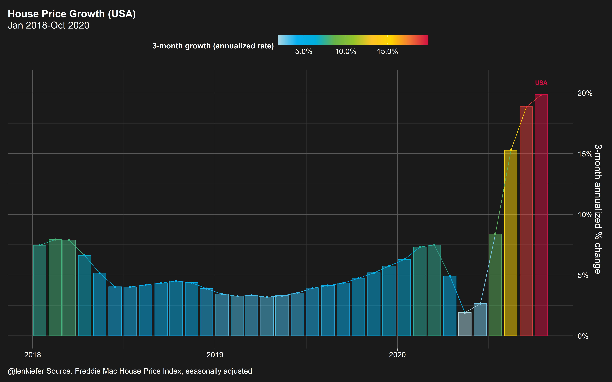
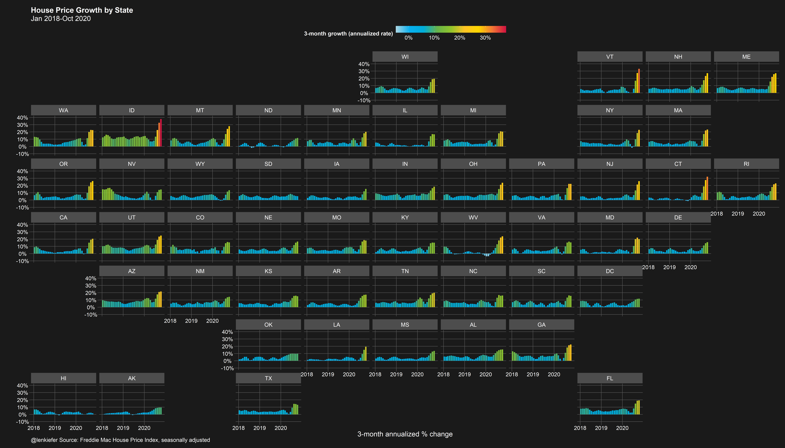
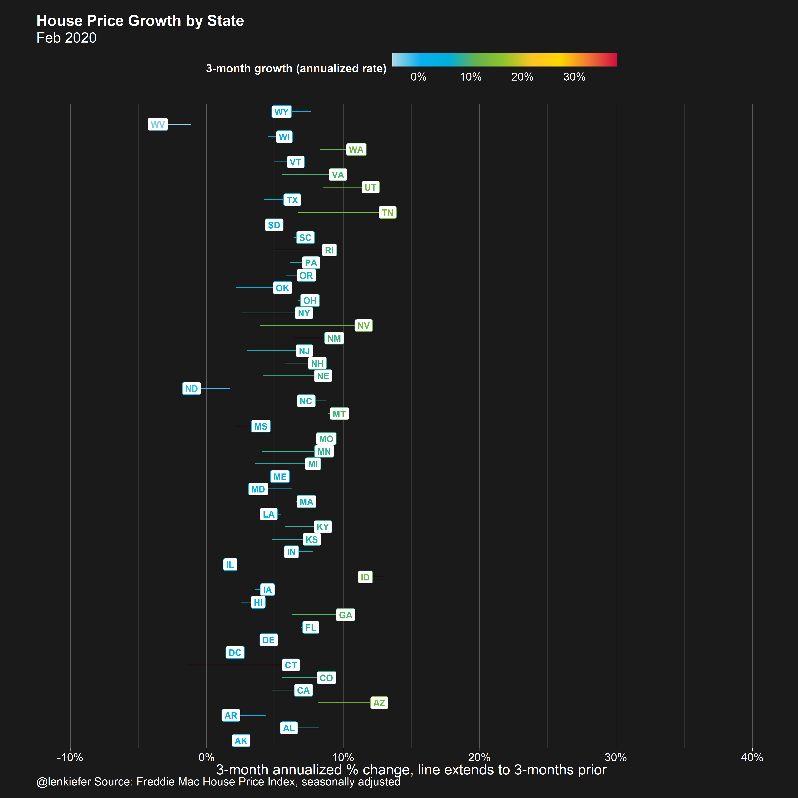
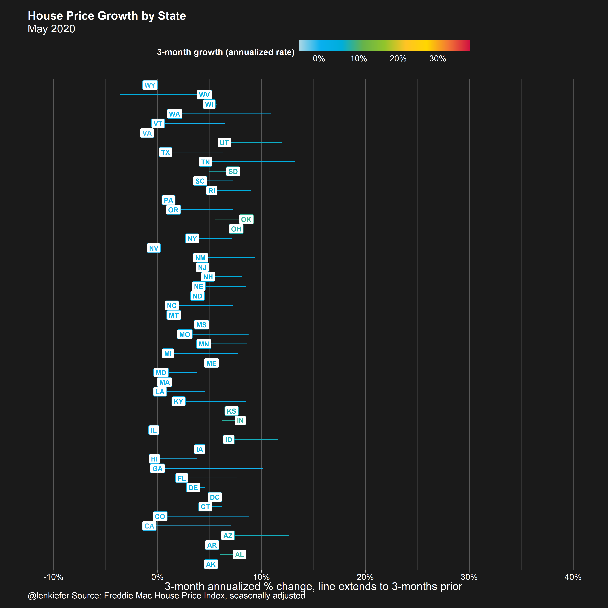
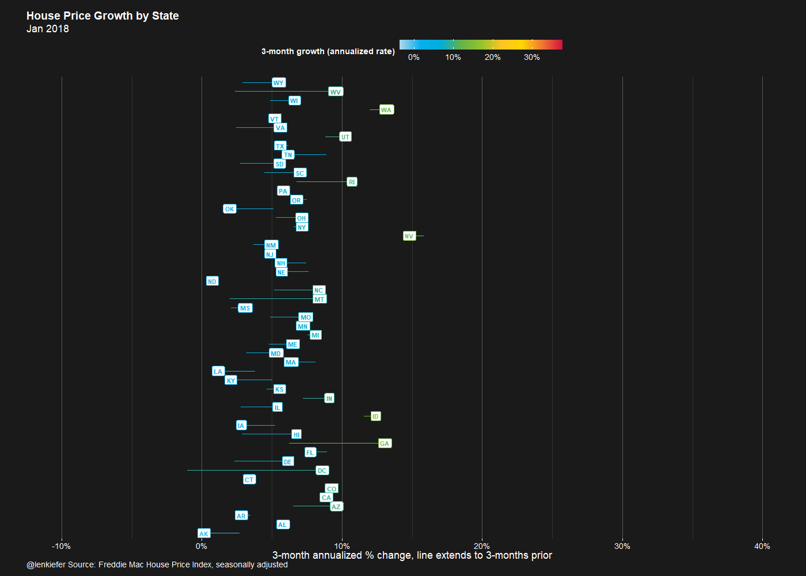
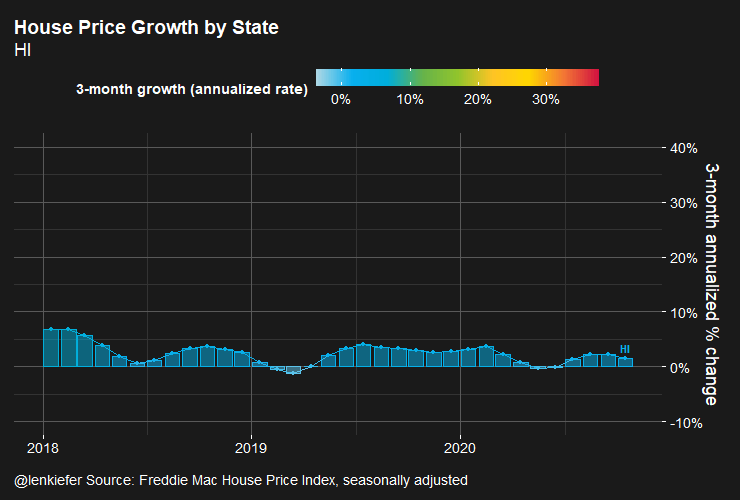

VISUAL MEDITATIONS are the analysis of repeated graphs of the same data with variations on a graphical theme. When altering the mapping of data to aesthetics sometimes interesting patterns emerge. I find it a useful practice. I made a series of these a few years ago with different charts. The chart images have been lost to past blog migrations, but the code should still work.
In this post, I want to consider several alternative ways to visualize house prices. We’ll use the Freddie Mac House Price Index and visualize the data with R (code at the bottom).
Throughout we’ll be looking at the annualized rate of change over 3-month sliding windows. For example, the latest data is through October 2020, so the rate of change we’re looking at is from July to October (growth in August, September, October).
The graph below shows that after slowing in spring, US house prices accelerated to a nearly 20 percent annualized growth rate over the past three months.

Variation 1: State trends with geofacet
But that national trend masks a lot of variations across states. Let’s map it out:

Here we can see that the acceleration is much higher in certain states like Idaho (ID) and Vermont (VT). Idaho’s house price growth rate is nearly double the US rate.
Variation 2: State trends segment
Let’s change up the mapping. Instead of using geo facets we can simply plot each state on the y axis and compare them vertically, with house price growth on the x axis. We’ll add a line segment that reached back 3 months and shows the relative trend. If the segment extends left, that means the state had slower growth 3 months ago and house price have accelerated. If the segment extends right, the oppostite.
Let’s consider February of 2020, before the COVID-19 pandemic hit the US economy.

For most, but not all states, the segment extends left, meaning price growth from December 2019 to February 2020 was higher than from October to December 2019.
Let’s roll foward 3 months to the period covering February 2020 to May 2020 compared to December 2019 to February 2020.

Here we see that many states were slowing down. At that point, it was reasonable to be concerned that the housing market would falter. But it did not. Thanks to low mortgage interest rate and policies like forbearance and foreclosure moratoria, the housing marke rebounded. Let’s look at the latest data:

In October 2020, most states are experiencing a rapid acceleration in house prices. WIth Idaho (ID) leading the way.
Variation 3: State trends segment animated
Now that we’ve build individual frames, let’s watch the animation unfold:

Here I think animation does a lot to help. You can see the acceleration in the plot.
Variation 4: State trends bar animated
Finally, we can go back to our original bar chart, and cycle through states. I’ve sorted states from the slowest growing in October 2020 (Hawaii HI) to the fastest (Idaho ID).

All these charts show us the same data, but in new ways that perhaps lead to some insights.
R Code
R code for the plots above can be found below.
# replace with path to save your files
mydir <- FILEPATH
#####################################################################################
# load libraries----
#####################################################################################
library(darklyplot) # for theme_dark2() function
# see http://lenkiefer.com/2020/07/03/using-darklyplot/
library(gganimate)
library(data.table)
library(tidyverse)
library(geofacet)
#####################################################################################
# color palette ----
#####################################################################################
# a color function for rainbow palette
# Function for colors ----
# adapted from https://drsimonj.svbtle.com/creating-corporate-colour-palettes-for-ggplot2
#####################################################################################
## Make Color Scale ---- ##
#####################################################################################
my_colors <- c(
"green" = rgb(103,180,75, maxColorValue = 256),
"green2" = rgb(147,198,44, maxColorValue = 256),
"lightblue" = rgb(9, 177,240, maxColorValue = 256),
"lightblue2" = rgb(173,216,230, maxColorValue = 256),
'blue' = "#00aedb",
'red' = "#d11141",
'orange' = "#f37735",
'yellow' = "#ffc425",
'gold' = "#FFD700",
'light grey' = "#cccccc",
'purple' = "#551A8B",
'dark grey' = "#8c8c8c")
my_cols <- function(...) {
cols <- c(...)
if (is.null(cols))
return (my_colors)
my_colors[cols]
}
my_palettes <- list(
`main` = my_cols("blue", "green", "yellow"),
`cool` = my_cols("blue", "green"),
`cool2hot` = my_cols("lightblue2","lightblue", "blue","green", "green2","yellow","gold", "orange", "red"),
`hot` = my_cols("yellow", "orange", "red"),
`mixed` = my_cols("lightblue", "green", "yellow", "orange", "red"),
`mixed2` = my_cols("lightblue2","lightblue", "green", "green2","yellow","gold", "orange", "red"),
`mixed3` = my_cols("lightblue2","lightblue", "green", "yellow","gold", "orange", "red"),
`mixed4` = my_cols("lightblue2","lightblue", "green", "green2","yellow","gold", "orange", "red","purple"),
`mixed5` = my_cols("lightblue","green", "green2","yellow","gold", "orange", "red","purple","blue"),
`mixed6` = my_cols("green", "gold", "orange", "red","purple","blue"),
`grey` = my_cols("light grey", "dark grey")
)
my_pal <- function(palette = "main", reverse = FALSE, ...) {
pal <- my_palettes[[palette]]
if (reverse) pal <- rev(pal)
colorRampPalette(pal, ...)
}
scale_color_mycol <- function(palette = "main", discrete = TRUE, reverse = FALSE, ...) {
pal <- my_pal(palette = palette, reverse = reverse)
if (discrete) {
discrete_scale("colour", paste0("my_", palette), palette = pal, ...)
} else {
scale_color_gradientn(colours = pal(256), ...)
}
}
scale_fill_mycol <- function(palette = "main", discrete = TRUE, reverse = FALSE, ...) {
pal <- my_pal(palette = palette, reverse = reverse)
if (discrete) {
discrete_scale("fill", paste0("my_", palette), palette = pal, ...)
} else {
scale_fill_gradientn(colours = pal(256), ...)
}
}
#####################################################################################
# data stuff ----
#####################################################################################
dt <- fread("http://www.freddiemac.com/fmac-resources/research/docs/fmhpi_master_file.csv")
#####################################################################################
# define variables ----
#####################################################################################
dt <- data.table(dt)[,":="(hpa12=Index_SA/shift(Index_SA,12)-1,
hpa3 = (Index_SA/shift(Index_SA,3))**4 -1 ),
.(GEO_Type,GEO_Name)
]
dt[,date:=as.Date(ISOdate(Year,Month,15))]
dt[, hpa3_lag3:=shift(hpa3,3), by=.(GEO_Type,GEO_Name)]
dts <- dt[Year>2017 & GEO_Type=="State",]
yy <- 2020
mm <- 10
#####################################################################################
# plot 1 bar chart ----
#####################################################################################
ggplot(data=dt[GEO_Name=="USA" & Year>2017,]
, aes(y=hpa3,x=date,color=hpa3,fill=hpa3))+
geom_col(alpha=0.5)+
geom_path()+
geom_point()+
geom_text(data= .%>% filter(date==max(date)),
nudge_y=.01,fontface="bold",size=4,
aes(label=GEO_Name))+
scale_y_continuous(labels=scales::percent_format(accuracy=1),
#limits=c(-0.1,.4),breaks=seq(-0.1,.4,.1),
position="right")+
labs(x="",
y="3-month annualized % change",
title="House Price Growth (USA)",
caption="@lenkiefer Source: Freddie Mac House Price Index, seasonally adjusted",
subtitle=paste0(format(min(dt$date),"%b %Y"),"-",format(max(dt$date),"%b %Y")))+
theme_dark2(base_family="Arial",base_size=18)+
theme(legend.position="top",legend.direction = "horizontal",
legend.key.width=unit(2,"cm"),
plot.title=element_text(size=rel(1.75),face="bold"),
#axis.text.y=element_blank(),
#axis.ticks.y=element_blank()
#,panel.grid.major.y=element_blank()
)+
scale_color_mycol(palette="cool2hot",
discrete=FALSE,label=scales::percent,name="3-month growth (annualized rate)")+
scale_fill_mycol(palette="cool2hot",
discrete=FALSE,label=scales::percent,name="3-month growth (annualized rate)")
ggsave(paste0(mydir,"fmhpi_usa_",yy,mm,".png"), height=5,width=8,scale=2)
#####################################################################################
# plot 2 geo facet bar chart ----
#####################################################################################
ggplot(data=dts, aes(y=hpa3, x=date,
group=GEO_Name, fill=hpa3))+
geom_col()+
scale_y_continuous(labels=scales::percent_format(accuracy=1),
limits=c(-0.1,.4),breaks=seq(-0.1,.4,.1))+
labs(y="",
x="3-month annualized % change",
title="House Price Growth by State",
caption="@lenkiefer Source: Freddie Mac House Price Index, seasonally adjusted",
subtitle=paste0(format(min(dts$date),"%b %Y"), "-",format(max(dts$date),"%b %Y")))+
theme_dark2(base_family="Arial",base_size=18)+
theme(legend.position="top",legend.direction = "horizontal",
legend.key.width=unit(2,"cm"),
plot.title=element_text(size=rel(1.75),face="bold")
,panel.grid.minor.y=element_blank()
,panel.grid.minor.x=element_blank()
)+
scale_fill_mycol(palette="cool2hot",
limits=c(-0.05,.38),
discrete=FALSE,label=scales::percent,name="3-month growth (annualized rate)")+
facet_geo(~GEO_Name)
ggsave(paste0(mydir,"fmhpi_state_",yy,mm,"_geofacet.png"), height=8,width=14,scale=2)
#####################################################################################
# plot 3 segment chart ----
#####################################################################################
myf <- function(yy=2020, mm=4){
dts2 <- dts[Year==yy & Month==mm,]
ggplot(data=dts2, aes(x=hpa3, y=GEO_Name, label=GEO_Name, color=hpa3))+
geom_point()+
geom_segment(aes(xend=hpa3_lag3, yend=GEO_Name))+
geom_label(size=4,fontface="bold")+
scale_x_continuous(labels=scales::percent_format(accuracy=1),
limits=c(-0.1,.4),breaks=seq(-0.1,.4,.1))+
labs(y="",
x="3-month annualized % change, line extends to 3-months prior",
title="House Price Growth by State",
caption="@lenkiefer Source: Freddie Mac House Price Index, seasonally adjusted",
subtitle=format(max(dts2$date),"%b %Y"))+
theme_dark2(base_family="Arial",base_size=18)+
theme(legend.position="top",legend.direction = "horizontal",
legend.key.width=unit(2,"cm"),
plot.title=element_text(size=rel(1.75),face="bold"),
axis.text.y=element_blank(),
axis.ticks.y=element_blank(),
panel.grid.major.y=element_blank())+
scale_color_mycol(palette="cool2hot",
limits=c(-0.05,.38),
discrete=FALSE,label=scales::percent,name="3-month growth (annualized rate)")
ggsave(paste0(mydir,"fmhpi_state_",yy,mm,".png"), height=14,width=14,scale=1)
}
myf(2020,2)
myf(2020,5)
myf(2020,10)
#####################################################################################
# plot 4 animated segment chart ----
#####################################################################################
a <-
ggplot(data=dts, aes(x=hpa3, y=GEO_Name, label=GEO_Name, color=hpa3))+
geom_point()+
geom_segment(aes(xend=hpa3_lag3, yend=GEO_Name))+
geom_label(size=4,fontface="bold")+
scale_x_continuous(labels=scales::percent_format(accuracy=1),
limits=c(-0.1,.4),breaks=seq(-0.1,.4,.1))+
transition_reveal(date)+
labs(y="",
x="3-month annualized % change, line extends to 3-months prior",
title="House Price Growth by State",
caption="@lenkiefer Source: Freddie Mac House Price Index, seasonally adjusted",
subtitle=paste0('{format(frame_along,"%b %Y")}'))+
theme_dark2(base_family="Arial",base_size=18)+
theme(legend.position="top",legend.direction = "horizontal",
legend.key.width=unit(2,"cm"),
plot.title=element_text(size=rel(1.75),face="bold"),
axis.text.y=element_blank(),
axis.ticks.y=element_blank(),
panel.grid.major.y=element_blank())+
scale_color_mycol(palette="cool2hot",discrete=FALSE,label=scales::percent,name="3-month growth (annualized rate)")
# test
# animate(a,nframes=10, end_pause=2, width=740,height=1000,fps=15)
animate(a,nframes=184, end_pause=30, width=740,height=1000,fps=15)
gganimate::anim_save(paste0(mydir,"fmhpi_dots_nov2020v5.gif"))
#####################################################################################
# plot 4 animated bar chart ----
#####################################################################################
dts3 <- dt[Year>2017 & (GEO_Type=="State"| GEO_Type=="US"),]
dts3$statef <- factor(dts3$GEO_Name,levels=dts3[date==max(date) ][order(hpa3),]$GEO_Name)
ab <-
ggplot(data=dts3[GEO_Name %in% c("ID","USA","HI","xVT")]
, aes(y=hpa3,x=date,color=hpa3,fill=hpa3))+
geom_col(alpha=0.5)+
geom_path()+
geom_point()+
geom_text(data= .%>% filter(date==max(date)),
nudge_y=.02,fontface="bold",
aes(label=GEO_Name))+
scale_y_continuous(labels=scales::percent_format(accuracy=1),
limits=c(-0.1,.4),breaks=seq(-0.1,.4,.1),
position="right")+
labs(x="",
y="3-month annualized % change",
title="House Price Growth by State",
caption="@lenkiefer Source: Freddie Mac House Price Index, seasonally adjusted",
subtitle="{closest_state}")+
theme_dark2(base_family="Arial",base_size=18)+
theme(legend.position="top",legend.direction = "horizontal",
legend.key.width=unit(2,"cm"),
plot.title=element_text(size=rel(1.75),face="bold")
)+
scale_color_mycol(palette="cool2hot",
discrete=FALSE,label=scales::percent,name="3-month growth (annualized rate)")+
scale_fill_mycol(palette="cool2hot",
discrete=FALSE,label=scales::percent,name="3-month growth (annualized rate)")
animate(ab+transition_states(GEO_Name),
nframes=30, end_pause=2, width=740,height=500)
gganimate::anim_save(paste0(mydir,"fmhpi_bars_nov2020.gif"))
ac <-
ggplot(data=dts3
, aes(y=hpa3,x=date,color=hpa3,fill=hpa3))+
geom_col(alpha=0.5)+
geom_path()+
geom_point()+
geom_text(data= .%>% filter(date==max(date)),
nudge_y=.02,fontface="bold",
aes(label=GEO_Name))+
scale_y_continuous(labels=scales::percent_format(accuracy=1),
limits=c(-0.1,.4),breaks=seq(-0.1,.4,.1),
position="right")+
labs(x="",
y="3-month annualized % change",
title="House Price Growth by State",
caption="@lenkiefer Source: Freddie Mac House Price Index, seasonally adjusted",
subtitle="{closest_state}")+
theme_dark2(base_family="Arial",base_size=18)+
theme(legend.position="top",legend.direction = "horizontal",
legend.key.width=unit(2,"cm"),
plot.title=element_text(size=rel(1.75),face="bold")
)+
scale_color_mycol(palette="cool2hot",
discrete=FALSE,label=scales::percent,name="3-month growth (annualized rate)")+
scale_fill_mycol(palette="cool2hot",
discrete=FALSE,label=scales::percent,name="3-month growth (annualized rate)")
animate(ac+transition_states(statef),
nframes=176*3, end_pause=20, width=740,height=500)
gganimate::anim_save(paste0(mydir,"fmhpi_bars_nov2020_allv2.gif"))